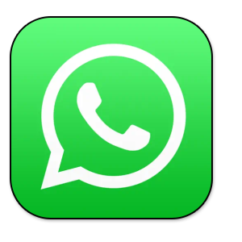

大陆翻墙后看什么？最佳国外App推荐: （2025翻墙必看）
🕓2025年2月8日
视频教程：▶https://youtu.be/aT2IQNCOHKM
一、为什么要翻墙？ 翻墙有什么用？
翻墙，顾名思义，就是翻过GFW的防火墙，访问在国内被屏蔽的互联网上的资源。这些被墙的网站和资源数量很多，内容五花八门：有政治敏感的，有涉及色情赌博的，有涉及违法犯罪的。除此之外，其实还有很多网站是对我们非常有帮助的网站。
翻墙出来主要就是为了突破信息壁垒，接触国外更多元化的内容。
二、翻墙后看什么？翻墙必下的App
1、YouTube
YouTube是全球最大的视频分享平台，是一款翻墙后必下的App。 你可以在这里观看各种类型的视频，包括音乐、电影、新闻、教育内容等。YouTube不仅是观看视频的地方，也是一个充满活力的社区，你可以订阅你喜欢的频道，与其他用户互动，甚至上传自己的视频，是最火的海外视频平台之一。
2、X（原名: Twitter推特）
X（原名Twitter）是一个全球性的社交媒体平台，是一款翻墙后必下的App。 用户可以发布和分享短消息，也被称为“推文”。这是一个全球的信息交流平台，你可以在这里获取最新的新闻和观点，参与各种热门话题的讨论，甚至直接与名人和公众人物互动。X的实时性和开放性使其成为了获取全球动态的重要渠道，是最有名的海外社交网络之一。
3、Telegram
Telegram（简称TG）中文名为电报，也称纸飞机、飞机 App。是一个即时通讯应用，以其安全性和速度而闻名，是一款翻墙后必下的App。 。用户可以在这里发送消息，分享文件和图片，创建群组和频道。Telegram的消息都是加密的，保护了用户的隐私。此外，Telegram还提供了许多其他功能，如自毁消息，机器人等，是最有名的海外社交网络之一。Telegram使用教程
4、Google 全家桶
（如Google mail、 Google Chrome、Google Maps、Google Drive 等）
4.1、谷歌浏览器（Google Chrome）就是一个速度快、界面简洁、插件多、超级好用的浏览器，全球最多人用。
它的特点：
- 启动快、网页加载快，比很多浏览器流畅。
- 界面简单，没有乱七八糟的广告，干净好用。
- 插件超多，能装翻译、广告拦截、密码管理等各种扩展。
- 和 Google 账户同步，换电脑也能直接恢复书签和历史记录。
4.2、谷歌邮箱（Google mail）是 Google 推出的免费邮箱，存储空间大，邮件基本不用删，随便存。
防垃圾邮件超强，广告邮件、钓鱼邮件过滤得很干净。
建议每个人翻墙出来的朋友，人手一个，特别是在注册海外APP的时候，特别好用。
4.3、谷歌地图（Google Maps）是一款提供全球地图信息和导航服务的应用，是一款翻墙后必下的App。Google Maps的地图数据详尽准确，无论你在哪里，都能提供准确的导航。此外，Google Maps还提供街景和卫星图像，以及实时的交通信息，是最有名的国外地图和导航App之一。
5、 ChatGPT

ChatGPT是由OpenAI开发的一款基于AI（人工智能）的聊天工具，能够理解和生成自然语言。无论你是想提出问题、获取建议、写作，还是编写代码，ChatGPT都可以帮助你完成这些任务，让你可以轻松体验人工智能带来的便利。ChatGPT注册教程
6、 Instagram
Instagram是一个图片和视频分享平台，是一款翻墙后必下的App。 用户可以在这里分享生活照片和短视频，关注朋友和名人，发现新的趣事和灵感。Instagram的故事功能让你可以分享生活的瞬间，而IGTV则让你可以分享更长的视频，是最火的海外图片和视频App之一。
7、 Netflix
Netflix是全球领先的订阅制流媒体服务，是一款翻墙后必下的App。Netflix提供各种电影和电视剧。Netflix的内容丰富多样，包括剧集、电影、动画、纪录片等，而且还有许多Netflix原创的高质量内容。Netflix的推荐系统会根据你的观看历史和喜好推荐内容，让你总能找到喜欢的节目，是最火的海外追剧app之一。最新奈飞Netflix会员各区价格&方案解析
8、Spotify
Spotify是一款流行的音乐和播客流媒体服务，提供数百万首歌曲和各种播客，是一款翻墙后必下的App。Spotify的个性化推荐和精心策划的歌单让你总能发现新的音乐。此外，Spotify还支持离线播放，让你在没有网络的时候也能享受音乐，是最火的海外音乐App之一。Spotify注册教程
9、Reddit

Reddit是一个社区驱动的内容分享平台，是最火的海外社区平台之一，是一款翻墙后必下的App。用户可以在这里发现，分享和讨论各种话题。Reddit有数以万计的社区，涵盖了各种主题，如新闻、科技、电影、游戏等。在Reddit，你可以阅读和参与讨论，也可以发布自己的内容。
10、TikTok
TikTok是一个短视频分享平台，是一款翻墙后必下的App。 用户可以在这里观看和分享各种有趣的短视频。TikTok的算法会根据你的喜好推荐视频，你也可以关注你喜欢的创作者。此外，TikTok还提供了许多创作工具，让你可以轻松制作出富有创意的短视频，也是最火的海外直播平台之一。TikTok下载养号相关教程
11、Google Voice
Google Voice 是 Google 提供的虚拟电话服务，可以免费获得一个美国号码，用来打电话、发短信、收验证码。
主要特点：
-
免费获取美国号码，适合注册国外网站、收验证码。
- 支持 WiFi / 数据网络通话，不用实体 SIM 卡也能打电话。
- 短信、语音邮件云端同步，多个设备都能用。
一句话：Google Voice = 一个免费的美国号码，收短信、打电话超方便！
12、 PayPal
PayPal 中文名贝宝，是全球最常用的在线支付工具，支持全球交易，购物、转账、收款都能用。
类似国内的支付宝。绑定银行卡或信用卡，不用每次输入卡号，支付更方便。
安全性高，有买家保护，不怕网上被骗。
是海淘党、跨境工作者的刚需工具，但用之前先研究清楚手续费，别被坑了！（顺便提醒：别用它干灰色交易，封号没商量！）
国内用户注册填写真实信息就好，也是翻墙必备工具之一
13、 Twitch
Twitch 在国内叫老鼠台，专注游戏直播，LOL、Dota2、CS:GO 等热门游戏全都有。是全球首屈一指的游戏直播社交视频平台。不仅有专业的电竞赛事直播，还有很多游戏主播的日常互动和娱乐内容。
类似于国内的虎牙、斗鱼，但是它可以播很多国内禁播的游戏，比如GTA5、彩虹6号等，如果国内没有你玩的那款游戏直播，可以在这里来找一找。
喜欢玩游戏的，Twitch是翻墙必下APP之一
14、 Discord
Discord是一个为各种兴趣爱好者设计的通讯平台，是一款翻墙后必下的App。 尽管最初是为游戏玩家设计的，但Discord现在已经发展成一个广泛的社区平台，用户可以在这里创建和加入各种社区，进行语音和文字聊天，分享图片和视频。Discord的服务器系统让你可以创建自己的社区，邀请朋友加入，一起分享兴趣，是最著名的海外社区App之一。
15、 Facebook（脸书）
全球流行的社交软件，在墙外的地位和国内的微信差不多，熟人社交。最近几年明显衰落，公司改名为 meta，主攻元宇宙市场
Facebook 以前是个社交神器，现在更像个全球“朋友圈”+信息流大平台，但年轻人越来越少用，很多人转去 Instagram 和 TikTok 了。
16、wahtsAPP

WhatsApp 是全球流行的聊天软件，类似微信，但更简单、更纯粹，没有广告。
免费聊天、打语音 & 视频电话，全球都能用。加好友只需手机号，不需要账号或用户名。端到端加密，隐私更安全，聊天记录不存云端。
17、Pinterest
Pinterest（译名：缤趣）是一个以视觉方式发现创意点子的地方，比如食谱、家装等等。类似于国内的花瓣网，主要用来找灵感、收藏美图、发现创意。
Pinterest 上有数以亿计的 Pin 图，你总能找到启发灵感的点子。当你发现自己喜欢的 Pin 图时，将它们收藏到图板中，使你的点子井井有条并且易于查找。你还可以创建 Pin 图以与其他 Pinterest 用户分享你的点子。
18、翻墙VPN推荐
海外APP都是需要翻墙后才能下载的，大家可以在苹果海外商店或者谷歌商店里下载。小露自用的翻墙VPN推荐：
🪜🪜🪜翻墙VPN 推荐| VPN名称 | 特 点 |
| ExpressVPN | 无限流量，安全、稳定、速度业内公认的第一，解锁tiktok、奈飞、ChatGPT，提供30天的退款保证。 |
| PureVPN | 老牌VPN，安全好用，价格便宜，解锁Tiktok、奈飞、ChatGPT，提供30天的退款保证。 |
| 小地球仪 | 主打高速稳定，性价比高，免费试用，解锁Tiktok、奈飞、ChatGPT。 |
| 穿梭回国VPN | 海外华人回国专用VPN，不限速，安全稳定。 |
🛡️🛡️🛡️翻墙机场推荐
小露自用机场 点此进入>>
精选机场推荐 点此进入>>
三、总结
翻墙出来主要就是为了突破信息壁垒，接触国外更多元化的内容：
- 娱乐方面：YouTube、Netflix、Twitch 给你不一样的视频体验；
- 社交资讯：Twitter、Facebook、Reddit 能让你了解国际动态；
- 音乐和工具：Spotify、Google 系列则帮你丰富生活和工作。
当然，具体选用哪些 APP，还得看你个人的兴趣和需求。希望这些推荐能帮你更好地接触到全球的信息与资源！